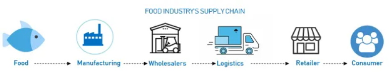
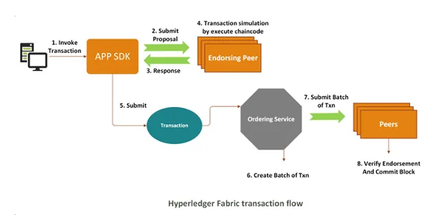

一、什么是区块链？
一项“很讲信用”的技术
区块链其实就相当于一个去中心化的数据库，是由一串数据块组成的。它的每一个数据块当中都包含了一次比特币网络交易的信息，而这些都是用于验证其信息的有效性和生成下一个区块的。
同村的张三向李四借钱，随后通过广播告诉全体村民，村民经过点对点的交叉确认核实了这个情况，随后各自在自己的账本上记上一笔，这样一来，全村村民账本上都有了记载。
狭义的来讲，区块链是就是一种按照时间顺序来将数据区块以顺序相连的方式组合成的一种链式数据结构，并以密码学方式保证的不可篡改和不可伪造的分布式账本。
而从广义来讲，区块链其实是一种分布式基础架构与计算方式，它是用于保证数据传输和访问的安全的。
区块链将如何改变我们的生活?
由于具备分布式、防篡改、高透明和可追溯的特性，区块链技术非常符合金融系统的业务需求，因此目前已在支付清算、信贷融资、金融交易、证券、保险、租赁等细分领域落地应用。
目前，区块链主要有公有链、联盟链、私有链三种类型。我国在区块链领域拥有良好基础，当前主要的研究热点集中于联盟链的关键技术。以住建部和中国建设银行合作的公积金管理系统为例，全国491个城市的公积金管理借助区块链技术，相当于实现了491个节点的点对点连接。“任何城市的公积金、任何公积金所管辖的个人，都可以异地进行相关业务操作。”陈纯说，如果不用区块链以前根本无法想象。
随着区块链技术创新发展逐步成熟，产业应用的实际效果愈发显现，区块链的应用已从金融领域延伸到实体领域。多名专家和业内人士表示，区块链技术未来在我国政务、金融、民生等相关领域具有广阔应用前景。比如通过区块链技术，可以实现政务数据的分布式共享；再比如，供应链上的龙头企业可以通过区块链将自己的信用传导到小微企业，进而部分解决融资难、融资贵的问题。
大规模应用仍面临挑战
区块链还是一种非常“年轻”的技术，技术和产业应用处于起步的阶段。专家们认为，区块链技术想要真正赋能经济社会，还面临多重挑战：
- 从技术上看，区块链的性能还有待提升。“一个标准的融合的区块链框架，要包含很多技术点，比如大规模的点对点网络，有十几万甚至几十万个节点。区块链本来就是点对点传输，但区块链的特点是节点数越多，性能会呈指数级下降，能不能突破这一个瓶颈很关键。”
- 人才储备上看，跨领域专业人才缺口较大。根据中国信通院发布的《区块链白皮书(2018年)》显示，区块链技术是一门多学科跨领域技术，在全球市场上，具有相关资深研发经验的人才有非常大的缺口，区块链顶层系统架构设计人才更是“一将难求”。
- 从推广应用上看，区块链首先要“管好”，才能“用好”。“没有一个好的监管，就像马路上没有交警、没有红绿灯。对区块链监管要求应该比对互联网的要求更高。”陈纯说，区块链作为重要的底层技术设施，在其快速发展的过程中，要高度重视安全问题。“任何一个好的技术或者工具，都需要被正确予以使用，才能发挥最大价值。区块链将能够全面支持新一轮数字经济发展。”
二、区块链介绍-智能合约
- 实现自己业务逻辑的一串代码
- 通过编译部署在区块链上
- 通过sdk或其他方式调用
- 是区块链账本的入口
核心概念
- 谁来产生区块
- 什么时候产生区块
- 哪些数据应该被包含在下一区块中
- 区块如何进行校验
- 区块如何保证数据同步性
区块链平台
- Bitcoin-比特币
- Ethereum-以太坊
- Hyperledger fabric-超级账本
三、区块链防篡改
区块数据结构
1 | { |
四、Hyperledger fabric
Hyperledger （超级账本）是一组开源工具，旨在构建一个强大的、业务驱动的区块链框架。
Hyperledger （超级账本）是区块链行业中最大的项目之一，它由一组开源工具和多个子项目组成。该项目是由 Linux 基金会主办的一个全球协作项目，其中包括一些不同领域的领导者们，这些领导者们的目标是建立一个强大的、业务驱动的区块链框架。
区块链网络主要有三种类型：公共区块链、联盟或联合区块链，以及私有区块链。Hyperledger 是一个区块链框架，旨在帮助公司建立私人或联盟许可的区块链网络，在该网络中，多个组织可以共享控制和操作网络内节点的权限。
因为区块链是一个透明的，基于不可变模式的安全的去中心化系统，所以它被认为是传统的供应链行业改变游戏规则的一种解决方案。它可以通过以下方式支持有效的供应链系统：
- 跟踪整个区块链中的产品
- 校验和验证区块链中的产品
- 在供应链参与者之间共享整个区块链的信息
- 提供可审核性
食品行业供应链
传统供应链效率低下的主要原因是由于缺乏透明度而导致报告不可靠和竞争上的劣势。
在传统的供应链模式中，有关实体的信息对该区块链中的其他人来说并不完全透明，这就导致了不准确的报告和缺乏互操作性问题。电子邮件和印刷文档提供了一些信息，但它们不可能包含完整详细的可见性数据，因为很难在整个供应链中去追踪产品。这也使消费者几乎不可能知道产品的真正价值和来源。
食品行业的供应链环境复杂，多个参与者需要协作将货物运送到最终目的地 —— 客户手中。下图显示了食品供应链（多级）网络中的主要参与者。

该区块链的每个阶段都会引入潜在的安全问题、整合问题和其他低效问题。目前食品供应链中的主要威胁仍然是假冒食品和食品欺诈。
基于 Hyperledger 区块链的食品跟踪系统可实现对食品信息全面的可视性和和可追溯性。更重要的是，它以一种不变但可行的方式来记录产品细节，确保食品信息的真实性。最终用户通过在不可变框架上共享产品的详细信息，可以自我验证产品的真实性。
Hyperledger Fabric
Hyperledger Fabric 是 Hyperledger 项目的基石。它是基于许可的区块链，或者更准确地说是一种分布式分类帐技术（DLT），该技术最初由 IBM 公司和 Digital Asset 创建。分布式分类帐技术被设计为具有不同组件的模块化框架（概述如下）。它也是提供可插入的共识模型的一种灵活的解决方案，尽管它目前仅提供基于投票的许可共识（假设今天的 Hyperledger 网络在部分可信赖的环境中运行）。
鉴于此，无需匿名矿工来验证交易，也无需用作激励措施的相关货币。所有的参与者必须经过身份验证才能参与到该区块链进行交易。与以太坊一样，Hyperledger Fabric 支持智能合约，在 Hyperledger 中称为*Chaincodes(链码)*，这些合约描述并执行系统的应用程序逻辑。
然而，与以太坊不同，Hyperledger Fabric 不需要昂贵的挖矿计算来提交交易，因此它有助于构建可以在更短的延迟内进行扩展的区块链。
Hyperledger Fabric 不同于以太坊或比特币这样的区块链，不仅在于它们类型不同，或者说是它与货币无关，而且它们在内部机制方面也不同。以下是典型的 Hyperledger 网络的关键要素：
*账本(Ledgers)*：存储了一系列块，这些块保留了所有状态交易的所有不可变历史记录。
*节点(Nodes)*：区块链的逻辑实体。它有三种类型：
- *客户端(Clients)*：是代表用户向网络提交事务的应用程序。
- *对等体(Peers)*：是提交交易并维护分类帐状态的实体。
- 排序者(Orderers) 在客户端和对等体之间创建共享通信渠道，还将区块链交易打包成块发送给遵从的对等体节点。
除了这些要素，Hyperledger Fabric 还有以下关键设计功能：
- *链码(Chaincode)*：类似于其它诸如以太坊的网络中的智能合约。它是用一种更高级的语言编写的程序，在针对分类帐当前状态的数据库执行。
- *通道(Channels)*：用于在多个网络成员之间共享机密信息的专用通信子网。每笔交易都在一个只有经过身份验证和授权的各方可见的通道上执行。
- 背书人(Endorsers) 验证交易，调用链码，并将背书的交易结果返回给调用应用程序。
- *成员服务提供商(Membership Services Providers)*（MSP）通过颁发和验证证书来提供身份验证和身份验证过程。MSP 确定信任哪些证书颁发机构（CA）去定义信任域的成员，并确定成员可能扮演的特定角色（成员、管理员等）。
如何验证交易
探究一笔交易是如何通过验证的是理解 Hyperledger Fabric 在底层如何工作的好方法。此图显示了在典型的 Hyperledger 网络中处理交易的端到端系统流程：

首先，客户端通过向基于 Hyperledger Fabric 的应用程序客户端发送请求来启动交易，该客户端将交易提议提交给背书对等体。这些对等体通过执行由交易指定的链码（使用该状态的本地副本）来模拟该交易，并将结果发送回应用程序。此时，应用程序将交易与背书相结合，并将其广播给 *排序服务(Ordering Service)*。排序服务检查背书并为每个通道创建一个交易块，然后将其广播给通道中的其它节点，对的体验证该交易并进行提交。
Hyperledger Fabric 区块链可以通过透明的、不变的和共享的食品来源数据记录、处理数据，及运输细节等信息将食品供应链中的参与者们连接起来。链码由食品供应链中的授权参与者来调用。所有执行的交易记录都永久保存在分类帐中，所有参与者都可以查看此信息。